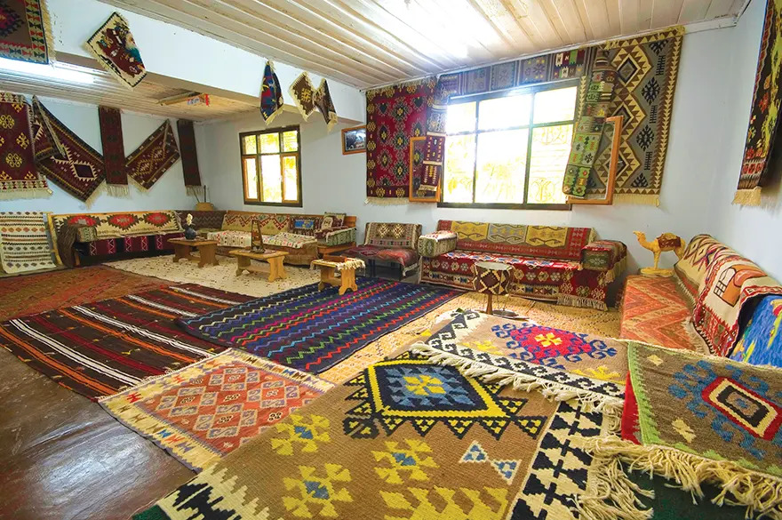
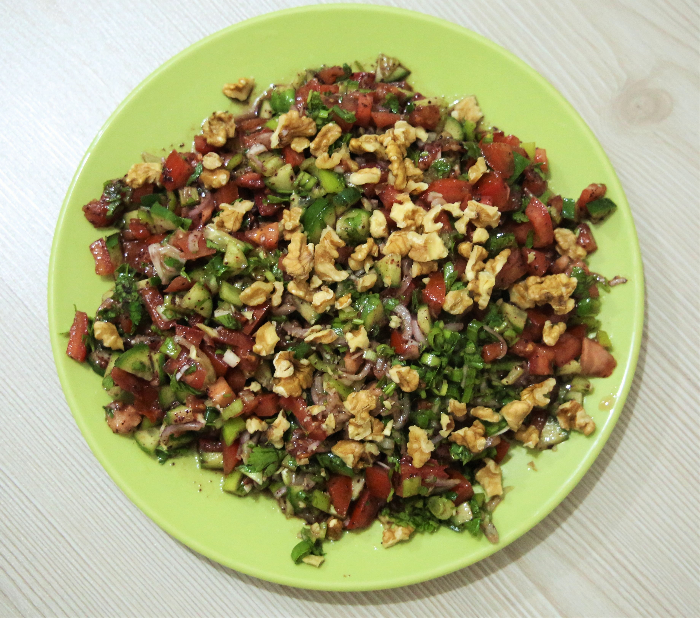
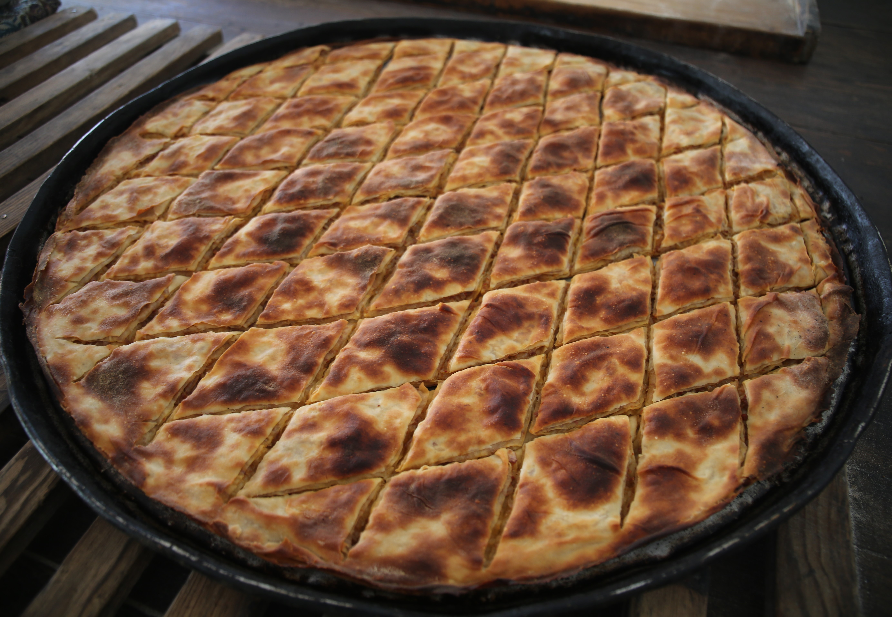
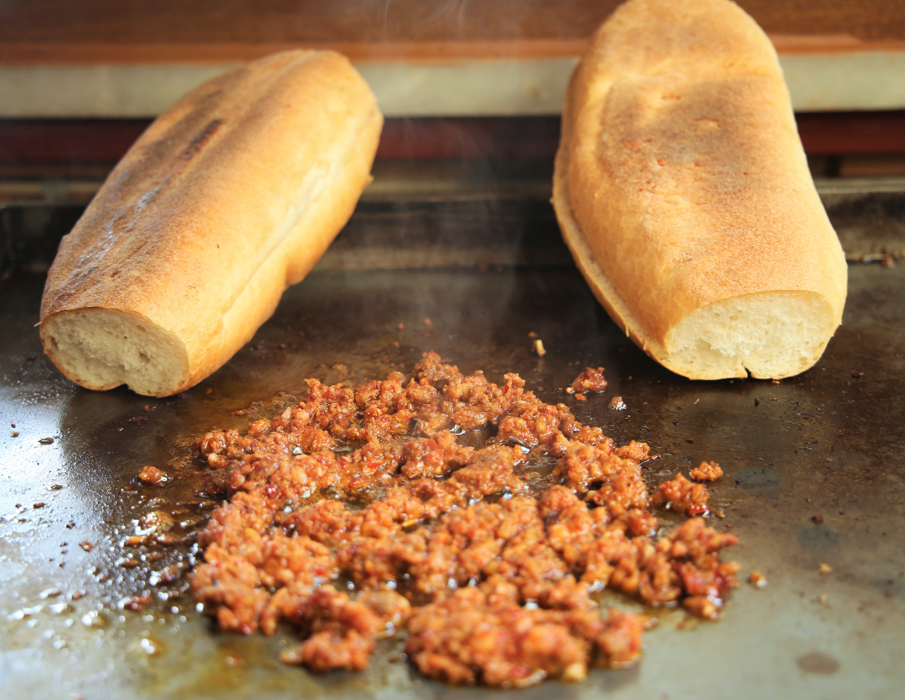
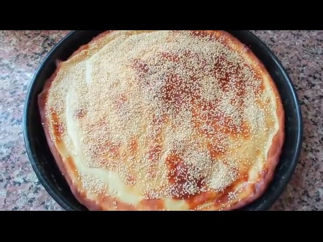

Kültürel Özellikler ve Gelenekler
Osmaniye, Çukurova kültürünün en saf yaşandığı merkezlerden biridir. Yüzyıllardır süregelen yaylacılık geleneği günümüzde de aktif olarak devam etmektedir. Yaz aylarında halkın büyük kısmı serinlemek amacıyla Zorkun Yaylası başta olmak üzere çevre yaylalara göç eder.
Ayrıca Karatepe kilimleri, kök boyasıyla yapılan tamamen doğal ve el emeği motifleriyle şehrin en önemli kültürel simgelerinden biridir. Her yıl düzenlenen Uluslararası Çukurova Karacaoğlan Kültür ve Sanat Şenlikleri ile Osmaniye Yer Fıstığı Festivali şehrin kültürel dinamizmini canlı tutmaktadır.

Yöresel Lezzetler
Osmaniye mutfağı, Akdeniz ve Doğu Anadolu mutfağının muhteşem bir sentezidir. Bulgur ve et yemekleri ön plandadır.
1. Zorkun Tavası
Kuzu eti, domates, biber ve sarımsağın özel baharatlarla harmanlanarak fırına verilmesiyle yapılan, adını Zorkun Yaylası'ndan alan efsanevi bir yemektir.

2. Tırşık Çorbası
Yaban pancarı (tırşık) otundan yapılan, yapımı oldukça zahmetli olan ama şifa niyetine içilen ekşili, yöresel bir çorbadır. "Andırın Doktoru" olarak da bilinir.

3. Osmaniye Simidi
Türkiye'nin diğer yerlerindeki simitlerden farklı olarak daha ince, çıtır ve pekmezle harmanlanmış odun ateşinde pişen nefis bir sokak lezzetidir.

4. Gavurdağı Salatası
Gavurdağı salatası, incecik kıyılmış domates, salatalık, biber ve bol ceviz içinin nar ekşisiyle harmanlanmasıyla yapılan enfes bir lezzettir. Adını Amanos (Gavur) Dağları'ndan alan bu yöresel salata, özellikle et ve kebap yemeklerinin yanında masaların baş tacı olarak servis edilir.

5. Sarmiçi
Sarmiçi, ince bulgurun salça, bol yeşillik, baharat ve nar ekşisiyle yoğrulup pişirilmeden, çiğ tüketilen Osmaniye'ye özgü harika bir lezzettir.

6. Etli Kömbe
Etli Sac Kömbesi, Osmaniye mutfağının en ağır ve özel misafirler için hazırlanan, iki sac arasında odun ateşinde pişirilen tescilli bir börek türüdür. İncecik açılan yufkaların arasına kıyma (veya kuşbaşı et), bol soğan ve baharatlı iç harç konularak yapılan bu lezzet, özellikle yayla kültürünün vazgeçilmez bir parçasıdır.

7. Kadirli Sucuğu
Kadirli Sucuğu, normal kasap sucuklarından farklı olarak ekmek arası olarak sokak lezzeti tarzında satılan, kendine has baharatları ve bol sarımsağıyla ünlü tescilli bir Osmaniye lezzetidir.

8. Bayram Kömbesi
Bayram Kömbesi, Osmaniye ve Akdeniz bölgesinde özellikle Ramazan ve Kurban bayramlarından önce imece usulüyle leğenlerle yapılan, uzun süre bayatlamayan geleneksel bir kurabiyedir.

9. Sütlü Kömbe
Sütlü/Pekmezli Kömbe, özellikle Osmaniye'nin köylerinde ve yaylalarında yapılan, unun süt, zeytinyağı ve yöresel mayayla yoğrulup fırına verilmeden önce üzerine bolca pekmez sürülerek iki sac arasında pişirilen geleneksel bir ekmek/çörek türüdür.
